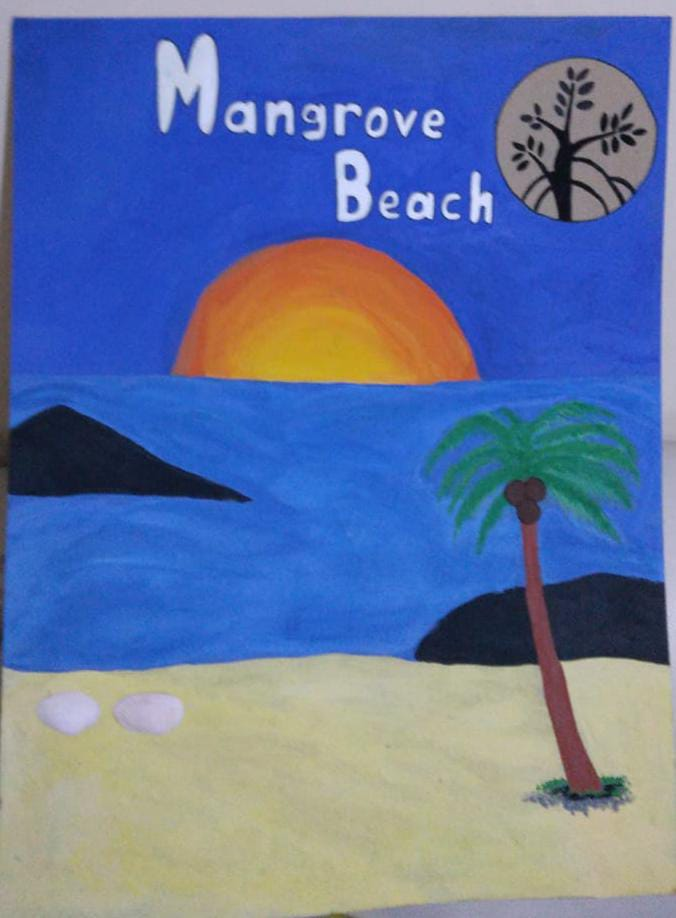

Mangrove Beach
Mangroves protect coastlines from deadly hurricanes and storms, waves, and floods. Mangroves also help prevent erosion by stabilizing sediment with their tangled root systems. They maintain water quality and clarity, filtering out pollutants and trapping sediments that come from land. Mangroves also support a number of threatened and endangered species such as, green sea turtle, loggerhead sea turtle and many more species.
In other parts of the world, people have used mangrove trees as a renewable resource. The trees are harvested for their durable, water-resistant wood. Mangroves also have been used to build houses, boats, piles, and furniture. Tannins and other dyes are extracted from the mangrove bark. The leaves have been used in teas, medicines, animal feed, and as a substitute of tobacco for smoking.
Some activities that I have done at the Mangrove Beach during my fieldtrip are planting mangrove trees, hunting for mangrove crabs, taking some photos, learning how to make jeruju chips from jeruju leaves, riding the ATV, and others.
